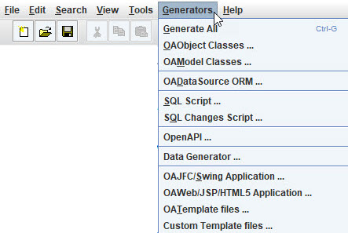

This menu shows the code generation that is included in OABuilder. These are used to create applications directly from the model, and are useful for developing proof of concepts, tools, and commerical software applications.
We have also developed other generators and will be adding more in the future.
The generators use various techniques, and can have ability to allow for two way
generation.

Generate All - run all of the code generators.
OAObject classes - observable ""smart pojo" entity Java classes. Each object in the model will have a Java class created for it. Also generated: classes for filters, search objects, and any request objects used for inputs.
OAModel classes - the model classes automate the wiring between the data objects, to form relationships like master/detail, linking, filtering, etc.
OADataSource ORM - automates the object to relational mapping so that the OA objects work with database. Queries, save, delete, cascading, references, etc. are all part of the functionality for OAObjects.
SQL Script - this will generate the DDL script used to create the database.
SQL Changes Script - OABuilder keeps track of all model changes and is able to generate a script that will then update the database.
OpenAPI - generate Swagger documentation for REST API.
Data Generator - this will generate sample data to use for testing, etc. We plan to have this be more specific in future releases.
JFC/Swing Application - this will create a fully functional Desktop UI application using the Java Swing components that have been extended to be Object Aware/bindable.
OAWeb/JSP/HTML5 Application - used to create webserver, REST API, JSP pages, and support for various html & javascript componentsets.
OATemplate files - this will take the template project and use it as the base for the new application.
Custom OATemplate files - extends OATemplate files with custom files.